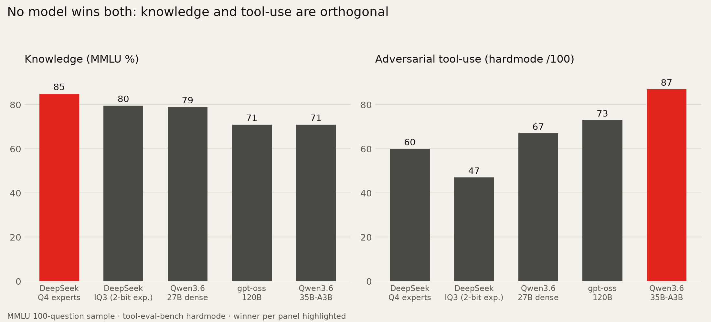
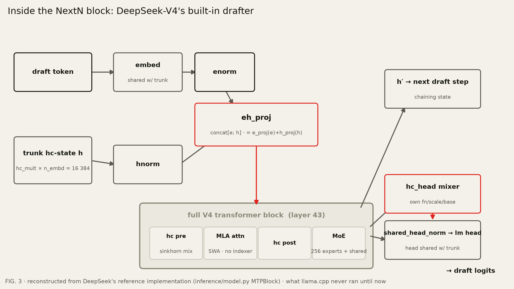
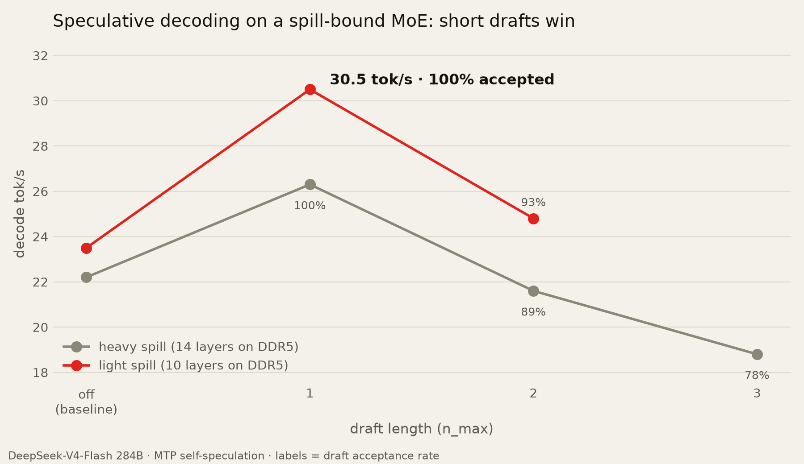
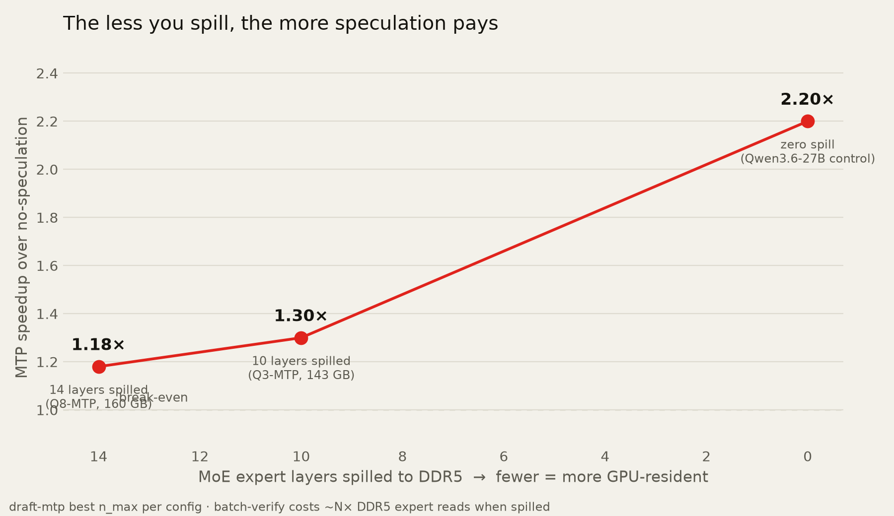
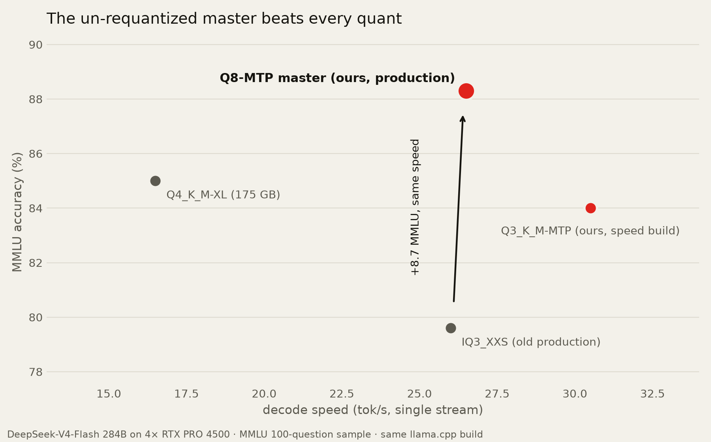

The 284B had a second brain. Every GGUF threw it away.
DeepSeek-V4 has a built-in speculative decoder. Every GGUF strips it. We built the missing piece, and the best DeepSeek file turned out to be one we already had.
Quick answer. DeepSeek-V4 ships a multi-token-prediction (MTP) head llama.cpp can use for speculative decoding, but every public GGUF strips it. We patched the converter, wrote the MTP graph, and fixed three upstream bugs. The winning file was our conversion master: 88.3 MMLU at 26-27 tok/s on four RTX PRO 4500s. The quant it replaced: 79.6 at the same speed.
Our last broadcast ended with a trade: deep or fast, pick one. This one refuses the trade. One weekend, one Threadripper, four RTX PRO 4500s, three mysteries, one story.
Why did a 284B model decode at 2 tokens per second?
A CPU-only op was the bottleneck. V4 routes every token through a small lightning indexer, and llama.cpp had merged that op CPU-only. Every token bounced from GPU to CPU and back.
One CUDA kernel later, 2 became a stable 26. The lesson: when no flag moves a bad number, stop tuning and read the load log.
How do you benchmark models that all score perfect?
Standard benchmarks were saturated, so we used harder ones. Every strong model tied at the ceiling. We switched to an MMLU knowledge sample and an adversarial tool-calling gauntlet.

- Skills are separate. A 35B MoE won tools. The 284B won knowledge. Size predicted neither.
- Size is not depth. A 27B dense model tied our production 284B on MMLU.
- The file matters most. Two quants of the same model sat 5.4 MMLU and 13 tool points apart.
What precision are your experts?
Expert precision is the hidden dial. The routed experts hold an MoE's knowledge, and quants spend bits on them very differently.
- Our quant (102 GB): experts at ~2.3 bits. Fast, but 79.6 MMLU and weak tools.
- Community Q4 (175 GB): 85.0 MMLU, but 16.5 tok/s: 86 GB of experts spill to DDR5.
- The verdict: "DeepSeek is weak at tools" was the 2-bit experts, not the model.
The menu said: smart or fast. The rest of this broadcast rejects the menu.
What is MTP, and why does no DeepSeek GGUF have it?
MTP is a free speculative decoder. The model drafts the next token, then verifies it in a pass it already runs. On Qwen3.6-27B, one flag took 27.0 tok/s to 59.3.
And no DeepSeek GGUF has it. llama.cpp's converter drops the
mtp.* tensors, and nothing could run them anyway: a full extra
transformer layer, 1,575 tensors, thrown away by every converter on earth. So we
wrote the missing piece.
How do you give llama.cpp the missing MTP?

- The converter: rekey the
mtp.*tensors as one more ordinary layer. The experts pass through at DeepSeek's native MXFP4. Remember that. - The graph: reuse V4's own attention and MoE builders. The hard part: the drafter's input is four times wider than the embedding, which broke the speculative driver.
- The bugs: three upstream fixes. A divide-by-zero, a quantizer crash, a metadata trap.
First light: coherent output, 82% draft acceptance, deterministic across runs. The head worked. And the model got slower.
When does speculative decoding pay for itself?
Speculation only pays when verifying is cheap. Our experts spill to DDR5, and every verified draft costs another round of expert reads through system RAM. The classic economics invert.

Draft one token and 100% are accepted. That is literally the head's training objective. Draft more and the verify tax eats the gain: 1.18x at 14 spilled layers, 1.30x at 10, 2.2x at zero spill.

Why was the best file the master all along?
The best file was already on disk. Our Q3 speed build hit 84.0 MMLU at 30.5 tok/s, but tied the old quant on tool-calling. Knowledge recovers at Q3 experts. Tools do not.
The wall taught the lesson. Eight minutes into a Q4 requant we killed the job: the master's experts are DeepSeek's original MXFP4 bits, and re-encoding them to Q4_K is lossy and bigger at once. Every community Q4 is that sideways re-encode.

- Master vs community Q4: 15 GB smaller, 3.3 MMLU points better, 1.7x faster.
- The master: 88.3 MMLU, our best tool floor on this hardware, 26-27 tok/s with MTP paying back the spill.
- The rule: quantize downward to shrink, never sideways.
Everything shipped. The llama.cpp patches are on our
public fork
(branch dsv4-mtp; llama.cpp's maintainers have native V4 MTP support on their roadmap, and our branch runs it today). The GGUFs, the only DeepSeek
GGUFs we know of with a working MTP head, are on
Hugging Face.
See what operators serve on the model directory and the
bands.
Frequently asked questions
- What is an MTP head?
- A multi-token-prediction head: an extra network some models (DeepSeek-V4, Qwen3.6) are trained with that predicts the token after next. At inference it acts as a built-in speculative-decoding draft model, so the main model can accept pre-drafted tokens and decode faster with no quality change. Accepted tokens are verified by the full model.
- Why doesn't my DeepSeek GGUF support MTP?
- Because every public DeepSeek-V4-Flash GGUF strips the MTP tensors: llama.cpp's converter dropped them and its C++ had no code to run them. The head is a full extra transformer layer, and nobody had implemented it. Our patches live on our public fork (llama.cpp's maintainers have native V4 MTP support on their roadmap), and our GGUFs ship with the head intact.
- Does speculative decoding always speed a model up?
- No. It assumes verifying drafted tokens is nearly free, which holds when the model lives in VRAM. If an MoE's experts spill to system RAM, verifying N tokens costs about N times the expert reads, and long drafts make the model slower. On a spill-bound MoE a draft length of 1 was our sweet spot, and the payoff grows as spill shrinks.
- Does quantization hurt a mixture-of-experts model?
- Where you spend the bits matters more than the average. Starving the routed experts to about 2 bits cost our 284B five MMLU points and a big slice of its tool-calling. Requantizing sideways costs quality too: MXFP4 experts re-encoded as Q4_K, which is what community Q4 files are, lose measurable quality while the file gets bigger. Quantize downward to shrink, never sideways.
- Why is 100% draft acceptance not suspicious?
- At temperature 0 with a draft length of 1, the MTP head is doing exactly the job it was trained for: predicting the single next token. Every draft is checked by the full model before it is kept. At draft lengths 2 and 3, acceptance drops to 89% and 78%, as expected.
- Can I run a 284B model at home?
- Yes, with roughly 128 GB of VRAM plus system RAM for the spill. Or skip the hardware and tune in to a station already serving one over RogerAI.
curl -fsSL https://rogerai.fyi/install.sh | sh